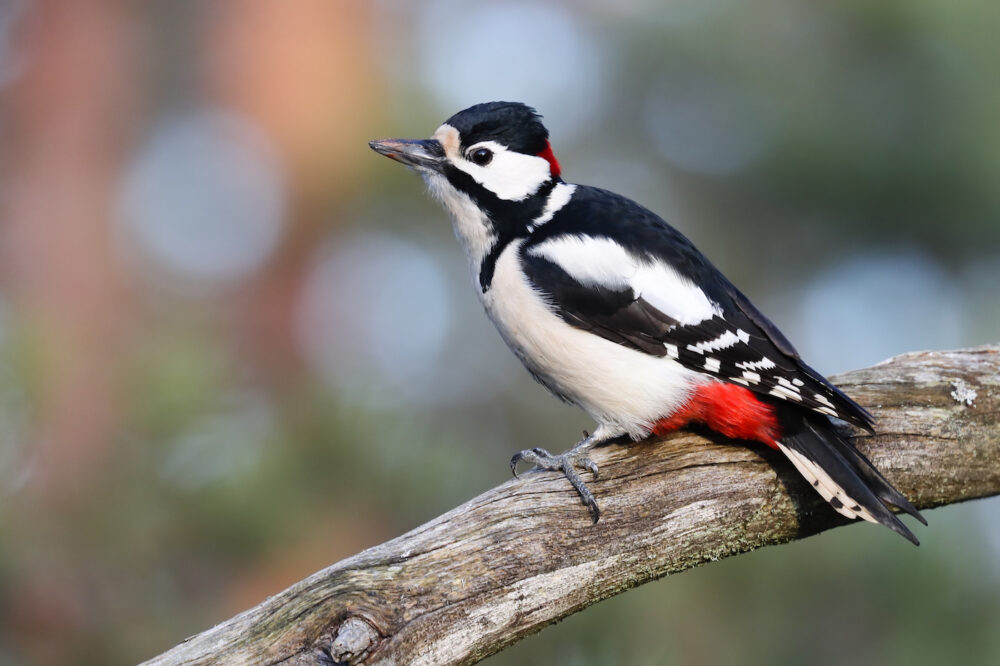
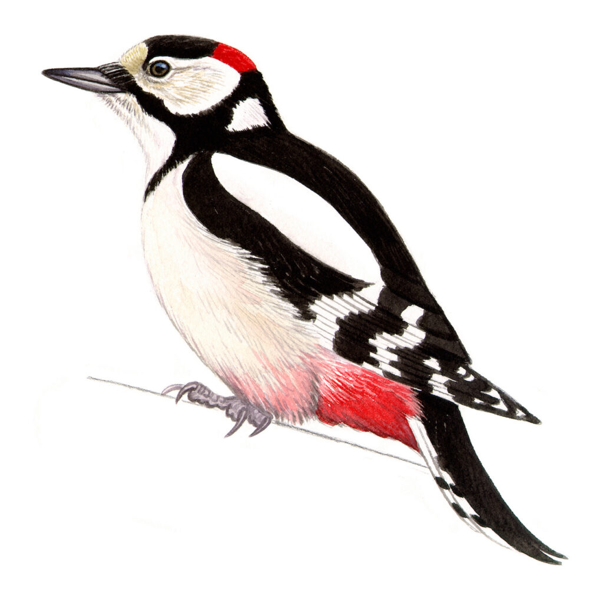
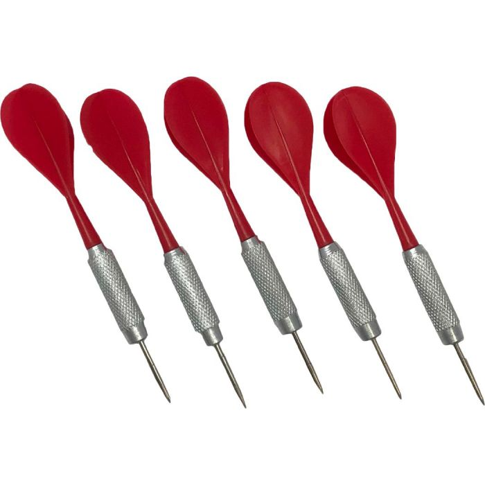
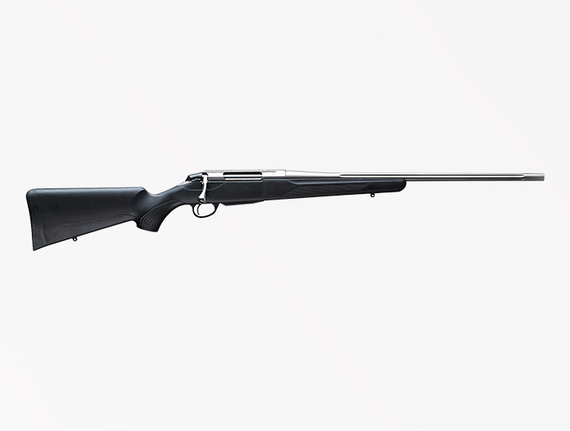

Terave. Tämä nettisivu on omistettu tikoille.
Tässä on Käpytikka
Täss on myös Käpytikka
Tää oon sit semmone heitettävä tikka!
mut tää on sit semmone tikka -ase
vielä 1... Tikka Masala!

Tässä on Tommi Tikka
Miltä Tikka näyttää?(se lintu)
Tikkalajien koko vaihtelee 8 ja 58 cm:n välillä. Pienin tikka on 8 cm pituinen amazonianraitatikkanen. Suurin laji on lähes 60-senttinen keisaritulikärki. Se on kuitenkin saattanut kuolla sukupuuttoon, joten suurin nykyisin varmuudella elossa oleva laji on 51 cm mittainen isohelmitikka. Tikoilla* on kummassakin jalassa neljä varvasta, joista kaksi osoittaa taaksepäin ja kaksi eteenpäin. Pohjantikalla on tosin vain kolme varvasta, joista yksi osoittaa taakse ja kaksi eteen. Tikkojen nokka on pitkä ja voimakas. Tikoilla on vahva pyrstö, jolla ne tukevat itseään puissa kiipeillessään. Tikkojen kieli on erittäin pitkä. Tikoilla on aivoissa iskunvaimennus rummutuksen aiheuttamaa rasitusta vastaan.
HTML Forms
If you click the "Submit" button, the form-data will be sent to a page called "/action_page.php".